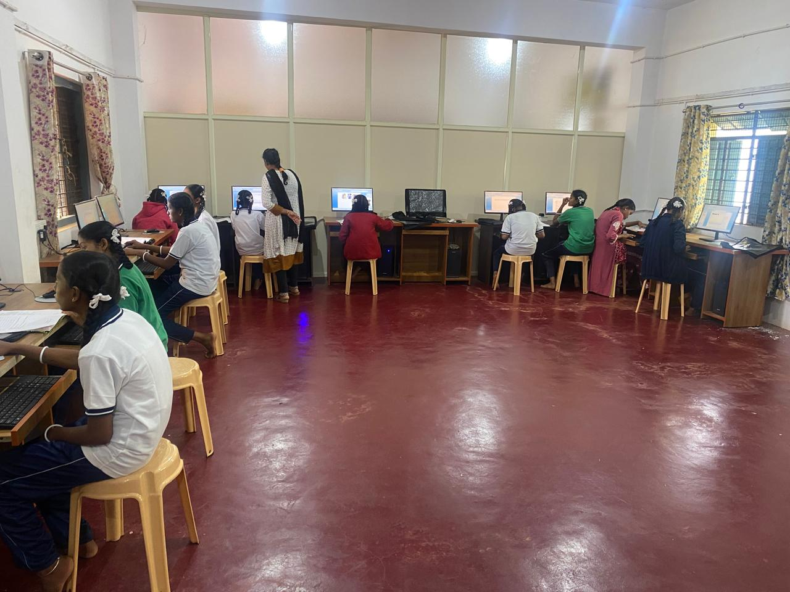
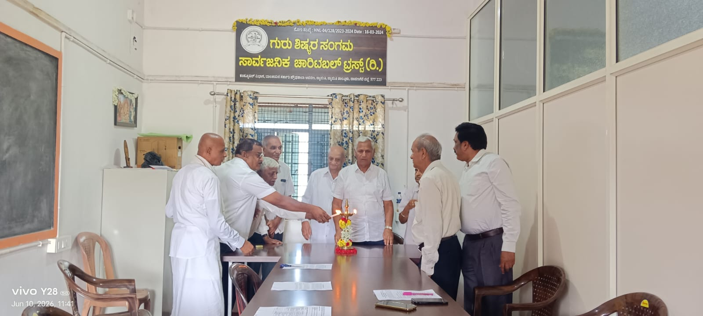
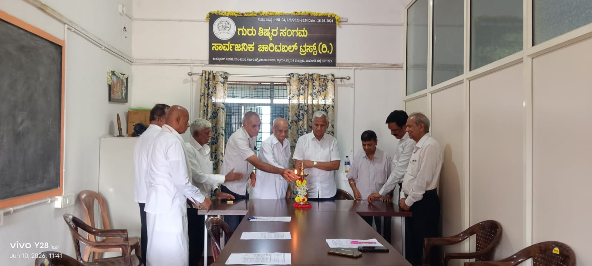

Activities
The Trust works out of Nyamathi, Davangere district, where its first programme brings computer education to government school students.
Computer education for girls — Nyamathi
The Trust runs a computer section on the premises of the Government Girls’ High School at Nyamathi. Students learn on desktop machines with supervised instruction, giving rural girls hands-on digital skills their school could not otherwise provide.

Trustees’ meetings and inauguration
The Board of Trustees meets at the Trust’s office in the school premises. Trustees gathered in June 2026 to light the ceremonial lamp and review the Trust’s work.



Planned work
Under its registered objectives, the Trust intends to widen its work to concessional schooling for poor students, direct support for talented and disabled students, seminars, social relief, encouragement of art and music in rural areas, and participation in government education schemes.